Основы алгоритмизации и программирования
Управление памятью
Содержание лекции
Устройство памяти
Память компьютера для программы на C/C++ разделяется на несколько разделов.
Основные из них, это
- Стек вызова
- Куча
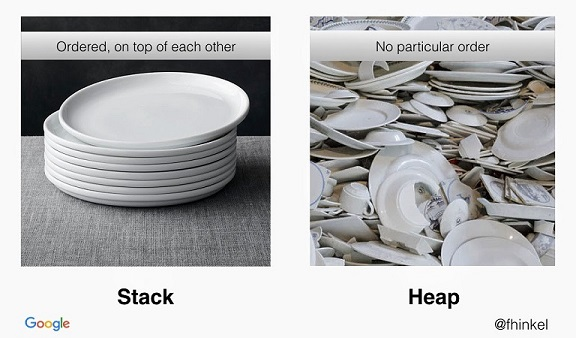
Стек вызова
Стек - упорядоченная и структурированная область памяти, используемая для быстрого доступа к временным локальным переменным.
Стек имеет ограниченный размер, по умолчанию в Visual Studio он составляет 1 МБ.
У каждого потока выполнения свой собственный стек вызова.
Кадры (фреймы)
Стек состоит из кадров.
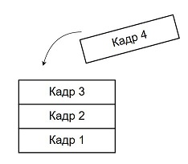Кадр (фрейм) - это специальная структура, связанная с вызовом функции, в которой хранятся все локальные переменные функции и дополнительная служебная информация.
Кадры
Кадры напрямую связаны с вызовами функций. При каждом вызове функции на вершину стека добавляется новый кадр с локальными переменными этой функции. После выхода из функции этот кадр удаляется из стека, вместе с ним удаляются из памяти и все локальные переменные этой функции.
Первый кадр стека всегда относится к функции main.
Структура стека вызова динамически изменяется во время работы программы.
Стек 1
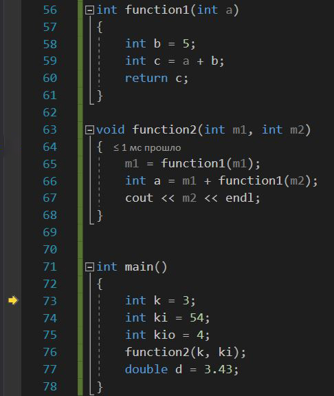
Стек 2
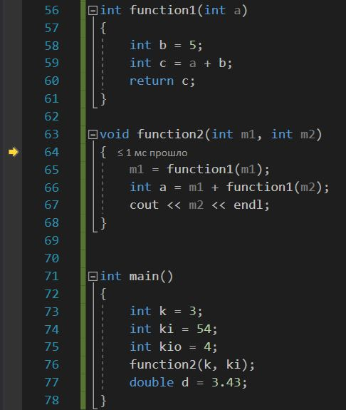 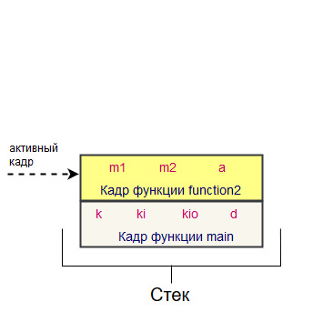Стек 3
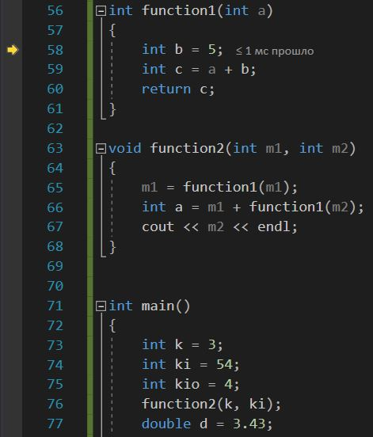 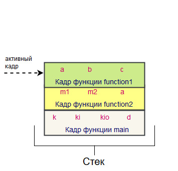Стек 4
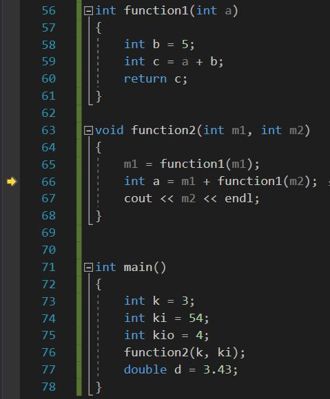Стек 5
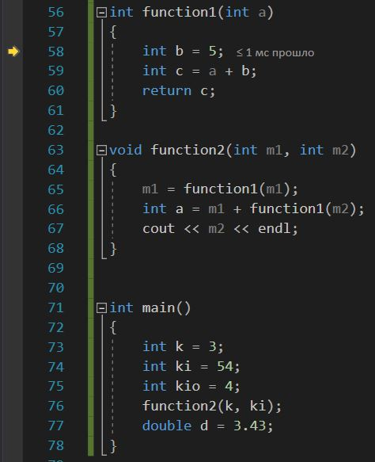 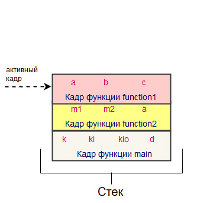Стек 6
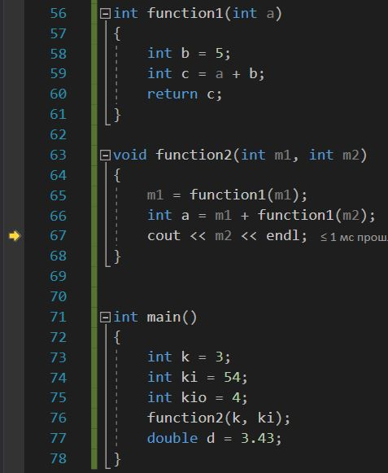Стек 7
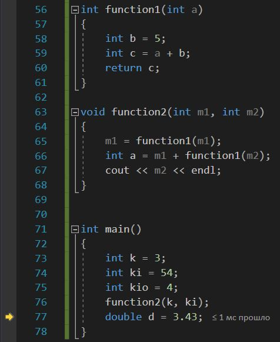
Особенности стековой памяти
- Стек расширяется когда в функциях создаются локальные переменные
- Память в стеке автоматически очищается, когда из него удаляется кадр
- Размер стека ограничен
- Переменные стека существуют только во время выполнения функции
Локальные переменные
Все переменные (и массивы, и указатели), которые мы использовали ранее, сохранялись в стеке. Это всё были локальные переменные.
Объявленные в функции main, в собственных функциях, все они существуют временно, пока выполняется их функция и в памяти стека хранится её кадр.
Статическое выделение памяти
Выделение памяти в стеке называется статическим выделением памяти.
Его особенность заключается в том, что объём занимаемой программой памяти расчитывается во время компиляции программы, а не во время выполнения.
Это значит, что размеры кадров стека имеют статический размер и не могут изменяться.
Пример
int func(double e)
{
int k = (int)(e / 3.1415);
int ost = k % 42;
int q = ost * ost;
return q;
}
int main()
{
int a;
double teta = 454.213, dzeta = -0.2781;
char str[20] = "Teta or dzeta";
cin >> a;
if (a == 2)
{
a = func(teta);
}
else
{
a = func(dzeta);
}
cout << a << endl;
return 0;
}
Разбор примера
Посмотрев на то, какие переменные создаются в данных функциях, даже мы можем посчитать, сколько для них потребуется памяти.
В main создаётся 1 переменная типа int, 2 переменные типа double и массив из 20 элементов типа char. В сумме это даст 40 байт.
Значит, еще на этапе компиляции будет подсчитано это число, и под кадр стека для функции main будет выделяться ровно 40 байт (грубо говоря), и ни сколько больше.
Куча (Хип)
Куча (хип) -- неупорядоченная и неструктурированная область памяти, вся оставшаяся память компьютера.
Соответственно, не имеет ограничения по размеру, кроме установленного физическим объёмом свободной памяти.
Память в куче общая для всех потоков выполнения программы.
Структура кучи
Куча это куча. У неё нет какой бы то ни было структуры, это просто набор ячеек памяти.
Доступ к памяти кучи может быть получен только по адресу ячейки. Т.е. только по указателю.
Особенности памяти в куче
- Значения могут быть получены из любого места программы (если есть адрес)
- Куча не ограничена по размеру
- Слегка медленне доступ (т.к. не напрямую, а только через указатели)
- Неэффективное и неупорядоченное расположение в памяти, приводящее к фрагментации
- Нужно самостоятельно выделять и освобождать память
- Размер созданных переменных можно менять
Динамическое выделение памяти
Выделение памяти в куче называется динамическим выделением памяти, и производится с помощью спецйиализированных команд.
В отличие от стека, где необходимый объём памяти определяется заранее на этапе компиляции программы, память в куче выделяется динамически по ходу работы программы.
Объём выделяемой динамически памяти определяется во время выполнения, например, на основании пользовательского ввода, или других событий. Может быть и прописан заранее в коде, как при статическом выделении.
Выделение и освобождение памяти
В стеке память выделяется и очищается автоматически при добавлении или удалении кадра из памяти.
Куча же требует ручного обращения с памятью. Это значит, что нужно явно прописывать не только команды по выделению памяти, но и по её освобождению.
Для каждого динамического выделения памяти должна быть прописана команда по её освобождению.
Утечки памяти
Несоблюдение этого правила влечёт за собой так называемые "Утечки памяти".
Утечка памяти - это процесс неконтролируемого уменьшения объёма памяти компьютера из-за ошибок программиста по освобождению памяти.
Функции динамического выделения памяти в C
В C для управления динамической памятью используется 4 функции:
| malloc | Выделение памяти для переменной |
| calloc | Выделение памяти для массива |
| realloc | Изменение размера выделенной памяти |
| free | Освобождение памяти |
Указатель на void
Все эти функции работают с указателями на void.
Указатель на void - это универсальная запись указателя на какую-то память без привязки к типу расположенного в ней элемента.
Использование указателя на void
Указатель на void не является полным типом объекта, поэтому с ним нельзя проводить никаких операций: нельзя получить значение, нельзя выполнять арифметические действия.
Чтобы из указателя на void получить полноценный указатель, нужно преобразовать его тип.
int iu = 4;
void* pv = &iu;
*pv = 3; // нельзя
iu = *pv; // нельзя
pv++; // нельзя
int* pi = (int*)pv; // преобразование в указатель на int
*pi = 3; // можно
Функция malloc
Функция имеет следующее определение:
void* malloc(unsigned size);
Функция возвращает указатель на начало области выделенной динамической памяти длиной в size байт, при неудачном завершении возвращает NULL.
int* a = (int*)malloc(4);
double* d = (double*)malloc(sizeof(double));
void* pv = malloc(sizeof(short int));
short int* ps = (short int*)pv;
Функция free
Функция имеет следующее определение:
void free(void* ptr);
Функция освобождает память, выделенную ранее функциями malloc, calloc или realloc, делая её доступной для последующих повторных выделений.
Для каждого вызова malloc, calloc или realloc в программе должен быть вызов free.
free(a);
free(d);
free(ps);
Функция calloc
Функция имеет следующее определение:
void* calloc(unsigned num, unsigned size);
Функция возвращает указатель на начало области динамической памяти для размещения num элементов длиной по size байт каждый, при неудачном завершении возвращает NULL.
char* mas = (char*)calloc(10, sizeof(char));
float* arr = (float*)calloc(4, sizeof(float));
free(mas);
free(arr);
Функция realloc
Функция имеет следующее определение:
void* realloc(void* ptr, unsigned new_size);
Функция изменяет размер блока ранее выделенной динамической памяти до размера new_size байт, параметр рtr - это адрес начала изменяемого блока, при неудачном завершении возвращает NULL.
int* pa = (int*)calloc(4, sizeof(int));
*(pa) = 1;
*(pa + 1) = 2;
*(pa + 2) = 3;
*(pa + 3) = 4;
pa = (int*)realloc(pa, 2 * sizeof(int));
cout << pa[0] << endl << pa[1] << endl << pa[2] << endl << pa[3] << endl;
Операторы динамического выделения памяти в C++
- new
- delete